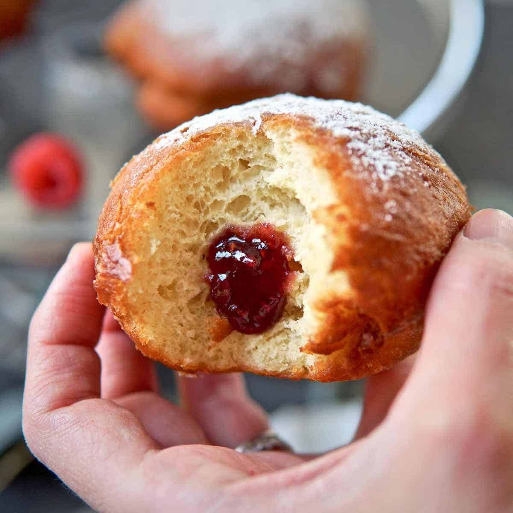

Berliner

Photo: Sophie Sadlers
How to Make Berliners
Berliner, Krapfen, Kreppel, Pfannkuchen... there are way too many words to describe the perfection that a German donut is.
Fluffy, deep-fried, powdered sugar drenched and usually filled with jam!
Ingredients
- 500 grams all-purpose flour plus a little dusting for shaping the berliner
- 1 pouch active-dry yeast 7 grams
- 250 milliliters milk luke warm
- 4 egg yolks
- 80 grams sugar
- 60 grams butter room temperature
- 1 teaspoon pure vanilla extract
- ⅛ teaspoon salt
- 200 grams jam
- powdered sugar
- 1 liter frying oilr
Steps
-
Combine the luke warm milk and yeast and set aside for 5 minutes.
It should be bubbly. If not, start over (your milk may have been too hot or too cold).
In the bowl of a standmixer, combine all ingredients for the dough and knead for 10 minutes on the medium-low setting.
Cover the bowl and allow to rest in a warm spot until doubled in size, about one hour.
-
Divide the dough up into equal pieces (best to use a kitchen scale),
and using flour-dusted hands, shape each portion into a ball.
Allow to rest for another 30 minutes (covered up by a clean linen towel).
-
Preheat frying oil (I prefer using avocado oil) to 160°C/320°F and bake in batches
(you will want the donuts to be able to swim on the surface) for about 2 ½ minutes,
then flip over to the other side using your strainer or slotted spoon and fry them until golden on the outside, 2 ½ more minutes.
I always set a timer for this. Your Berliner will fry for a total of 5 minutes.
-
Fill each Berliner with your favorite jam using a decorating bag and filling tip and dust with powdered sugar.
I also LOVE filling them with plum butter! So lecker!